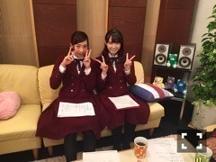
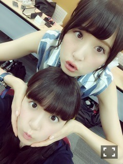

| 2015/11 13 Fri | ひめたん-0o0-その588 |

公式サイトのプロフィール写真が
13thシングルver.に変わったよー！
火曜日は名古屋テレビ
「BOMBER-E I.ナイト」の
公開収録でした～
来てくださったみなさんありがとう！
外れちゃったよ～って方も
応募してくれてありがとう！
オンエアは12/8です(^o^)♪
今回60分スペシャル放送決定ということで
大人数で呼んでいただけるなんて
本当にありがたいことですね。
トークパートとライブパート
どちらも充実した内容に
なっていると思いますっ！
昨日は舞台「リボンの騎士」を
観に行きました！
いくちゃんも玲香も
とってもキラキラしてた(´,,•ω•,,｀)
同じメンバーが別のステージで
活躍している姿を観て改めて
リスペクトと、私も頑張らなきゃなって
気持ちになりました。
そして、たくさんの方に愛されている作品に
私も触れることができて感激です......
千秋楽まで応援しています！

本日ソニレコ配信日！
みなさんもう観てくれたかなー？
今回も3人でお送りしています
ひまっぴーのおともだち投票
是非参加してみてください( ˇωˇ )
次回はスタジオに
Thinking Dogsの皆さんが
来てくださいますよ～♪
番組へのおたよりはこちらまで。
sonyreco@sonymusic.co.jp
次回のらじらーゲストは
衛藤美彩ちゃんです＼(^o^)／
2回目の登場ですね～みさ先！
今回の対決企画は「10秒相談室」！
前回は私が負けてしまったから
次は別の対決なんですね
このパターンは初めてかな？
美彩先輩へのメッセージもお待ちしてます
おたよりの宛先はこちら。
http://www.nhk.or.jp/radirer/


明日のマサカメTV
明後日の乃木坂工事中
是非観てください～＊
あれ、一週間ってこんなに早かったっけ。

 今年の受験生応援してくれてたら
今年の受験生応援してくれてたら
めっちゃ嬉しいです！
これから大事な時期なんだね(´｡•ω•｡`)
身体に気をつけて、しっかりあったまって
自分のペースを大切に......
最後まで応援しています～＊
推し松は何松？
みんな好きだけれど
誰か一人と言われたらチョロ松！
日芽香さんは何鍋が好き？
キムチ鍋ともつ鍋以外なら
何でも食べますよ(´｡•ω•｡`)
髪の毛セットするの
ツインじゃないほうが楽ですか？
ツインの方が楽かも(´｡•ω•｡`)
でも今の髪型みんなに褒められるから
全然平気(´｡•ω•｡`)b
みり愛ちゃんと
ごはん行ってきました♡
1時間くらい行列並んだんだけれど
ずーっとお喋りとまんなかったの
楽しかった～(｀・ω・´)

(＊´・ω・＊)
コメント(925)
2015/11/13 23:30